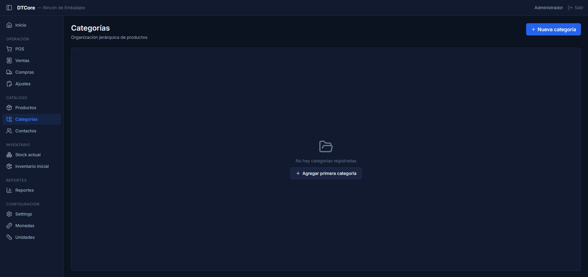
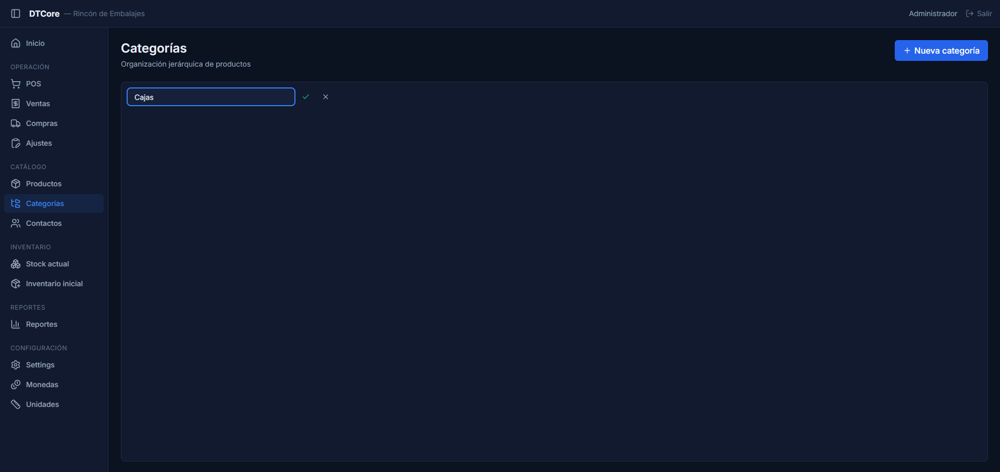
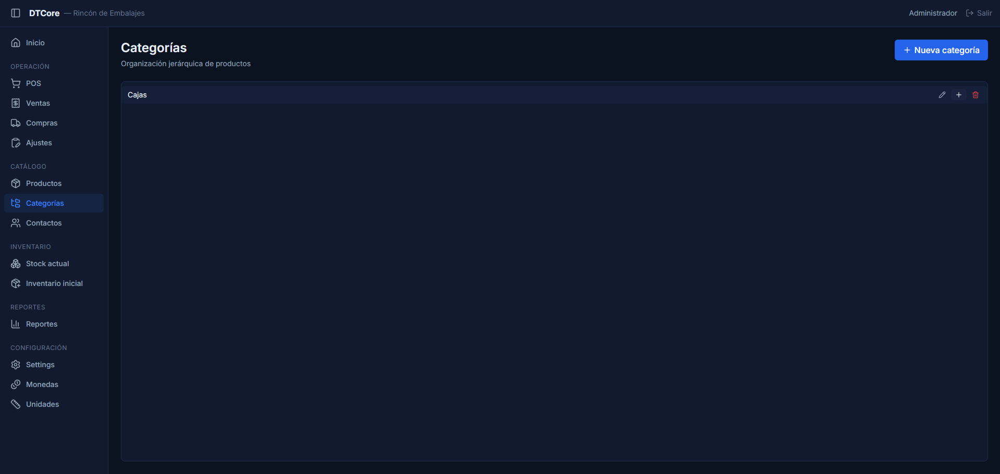
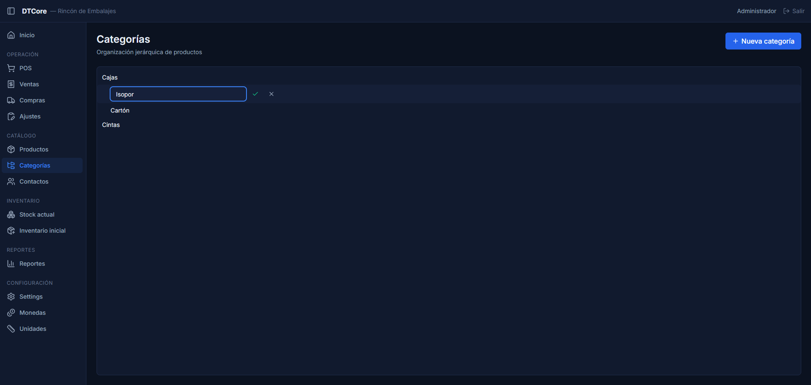
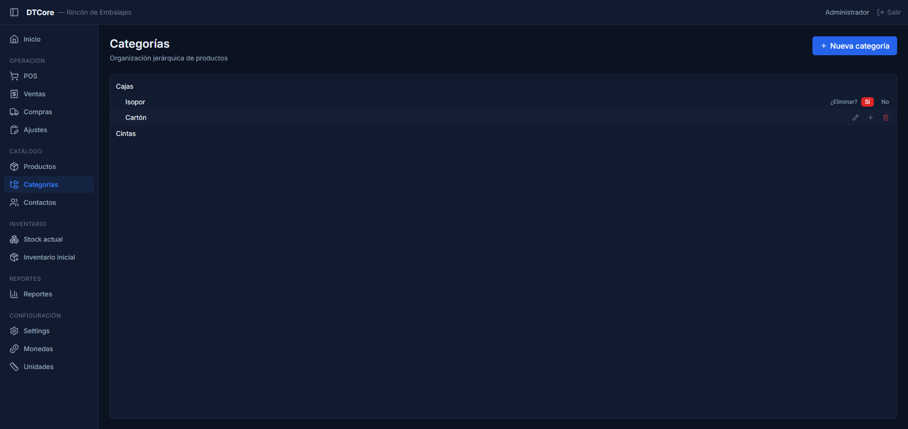

¿Para qué sirve?
Las categorías te permiten agrupar los productos de tu catálogo para encontrarlos más fácil. Por ejemplo: "Bebidas", "Lácteos", "Limpieza". Dentro de cada grupo podés crear subgrupos más específicos: "Bebidas → Gaseosas", "Bebidas → Jugos".
Al crear o editar un producto, podés asignarle una categoría. Esto facilita la búsqueda en los listados, los filtros y los reportes. Planificar bien la estructura de categorías desde el inicio ahorra mucho trabajo después, porque cambiar la categoría de cientos de productos uno por uno lleva tiempo.
Pasos
-
1
Ir a la pantalla de Categorías
En el menú lateral (la barra de la izquierda), buscá la sección Catálogo y hacé click en Categorías.

Si todavía no hay ninguna categoría cargada, verás el mensaje "No hay categorías registradas" con un botón Agregar primera categoría.
-
2
Crear una categoría principal
Hacé click en el botón azul + Nueva categoría que está en la esquina superior derecha.

Aparece un campo de texto al pie de la lista con el texto de guía "Nombre de la categoría". Escribí el nombre del grupo (por ejemplo: "Bebidas") y confirmá de una de estas dos formas:
- Hacé click en el ✓ (tilde verde) para guardar.
- Presioná Enter en el teclado.
- Para cancelar sin guardar, hacé click en la ✕.
La nueva categoría aparece en la lista en orden alfabético.
-
3
Crear una subcategoría
Pasá el mouse por encima de la categoría donde querés agregar el subgrupo. A la derecha del nombre aparecen tres íconos pequeños: ✏ lápiz, + más y 🗑 tacho.

Hacé click en el + (el del medio). Aparece un campo de texto debajo de esa categoría, con sangría (indentado), indicando que va a quedar dentro de ella.
Escribí el nombre de la subcategoría (por ejemplo: "Gaseosas") y confirmá con el ✓ o con Enter.
⚠ Solo se pueden crear subcategorías de un nivel El sistema admite máximo 2 niveles: categoría principal → subcategoría. No es posible crear subsubcategorías (una subcategoría dentro de otra subcategoría). Si necesitás más detalle, usá el campo de descripción del producto. -
4
Renombrar una categoría
Pasá el mouse sobre la categoría que querés cambiar y hacé click en el ícono de ✏ lápiz (el primero de los tres).

El nombre de la categoría se convierte en un campo de texto editable con el valor actual ya cargado. Modificá el texto y confirmá con ✓ o Enter. Para descartar el cambio, presioná ✕.
El cambio se guarda de inmediato y todos los productos que tenían esa categoría asignada quedan actualizados automáticamente.
-
5
Eliminar una categoría
Pasá el mouse sobre la categoría y hacé click en el 🗑 tacho rojo (el último de los tres íconos).

La fila muestra el nombre de la categoría seguido de la pregunta "¿Eliminar?" y dos botones: Sí para confirmar y No para cancelar.
⚠ No podés eliminar una categoría que tenga productos activos Si intentás eliminar una categoría que todavía tiene productos asignados, el sistema muestra el error:
"La categoría tiene productos asociados y no puede eliminarse"
Antes de eliminarla, tenés que entrar al módulo de Productos y cambiar la categoría de esos productos (asignales otra categoría o dejala en blanco).⚠ No podés eliminar una categoría que tenga subcategorías Si la categoría tiene subgrupos dentro, el sistema muestra:
"La categoría tiene subcategorías y no puede eliminarse"
Primero eliminá las subcategorías (de abajo hacia arriba), y después podés eliminar la categoría principal.
Consejos / Errores comunes
- Planificá la estructura antes de empezar a cargar productos Cambiar la categoría de muchos productos después lleva tiempo porque hay que hacerlo uno por uno. Antes de cargar el catálogo, pensá qué grupos principales necesitás y si alguno va a tener subgrupos.
- Dos niveles son suficientes para la mayoría de los negocios Un árbol con más de dos niveles (categoría → subcategoría → sub-subcategoría) se vuelve difícil de navegar en el POS y en los listados. Si necesitás más detalle, es mejor crear más categorías al mismo nivel que anidarlas.
- Los íconos de acción aparecen al pasar el mouse En pantallas táctiles (celulares o tablets) los íconos de lápiz, más y tacho siempre están visibles. En una PC con mouse, aparecen solo cuando pasás el cursor por encima de la categoría.
- Error: "La categoría tiene productos asociados y no puede eliminarse" Andá al módulo Productos, filtrá por esa categoría, y editá cada producto para asignarle otra categoría. Cuando no quede ningún producto en la categoría, podrás eliminarla.
- Error: "La categoría tiene subcategorías y no puede eliminarse" Primero eliminá o vaciá las subcategorías (empezando por las que no tienen productos). Solo cuando todas las subcategorías estén eliminadas podrás eliminar la categoría principal.
- No se pueden fusionar dos categorías directamente Si querés unir dos grupos, tenés que mover los productos de una categoría a la otra manualmente en el módulo de Productos, y después eliminar la que quedó vacía.